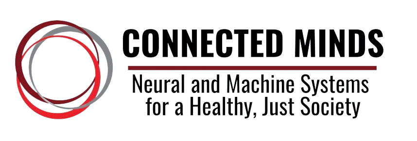
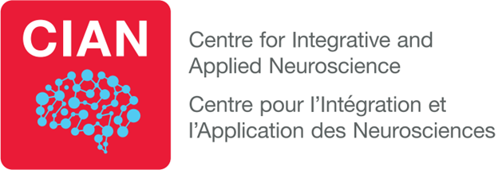
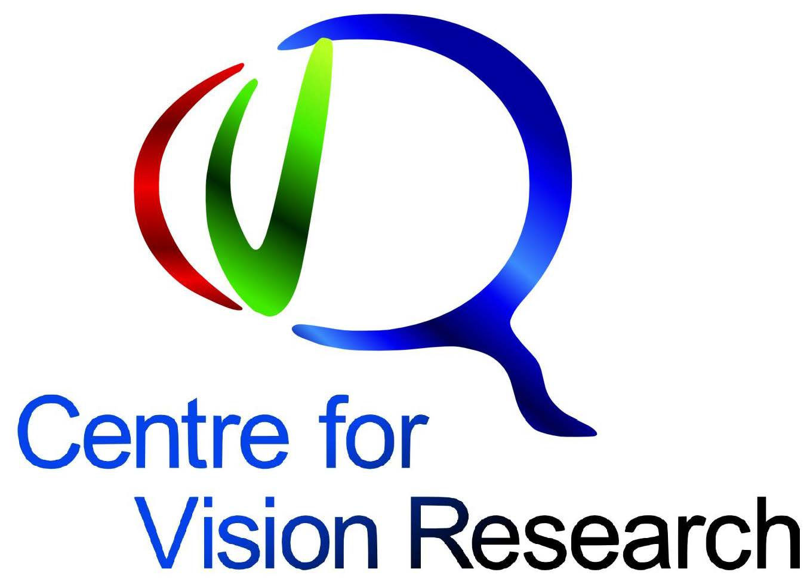
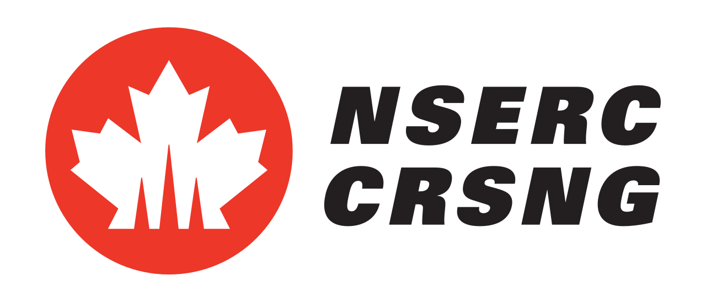
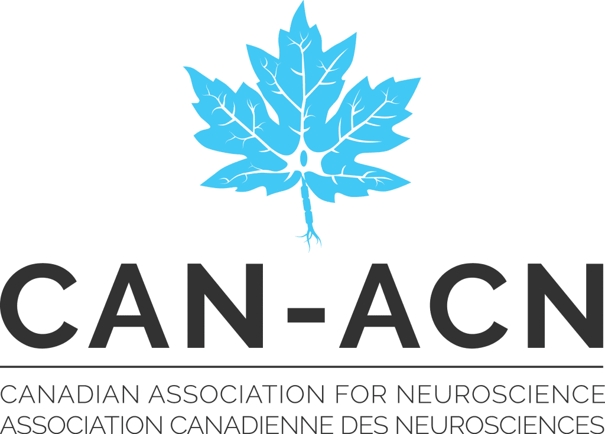
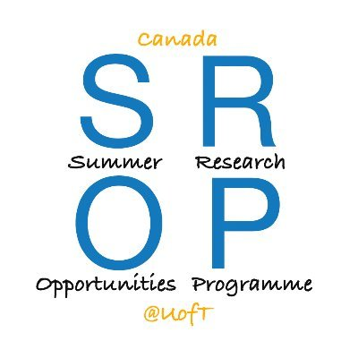
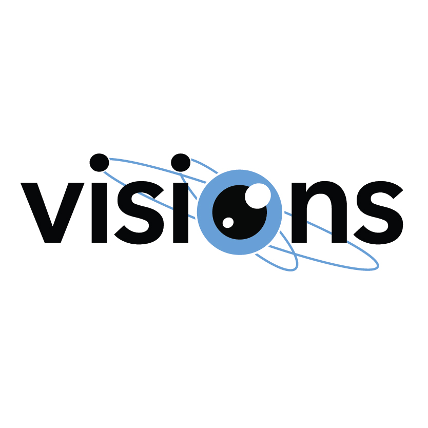

Ryley P. Nathaniel
PhD Candidate
Brain, Behaviour, & Cognitive Sciences | York University
Welcome! I am a researcher and graduate student specializing in groundbreaking topics. Explore my work using the navigation menu at the top right.
Download Curriculum Vitae (CV)
Blog
Significantly Speaking
Expected on September 1, 2026
...
Neurointelligence Course in Japan
Expected on August 1, 2026
My experience as an IRCN travel student at the University of Tokyo.
Preparing for a Master's thesis defence
Expected on July 1, 2026
...
Research
My research lies at the intersection of cognitive neuroscience and reinforcement learning.
Rule-based flexible decision-making in rats
In Progress
A Master's thesis manuscript.
How to: Keep our Minds at Bay
Privately published at the Baycrest Centre Hospital, 2024 | Authors: Ryley Nathaniel, Komal Shaikh
A ~50-page psychological self-help book with interactive activities inside.
New Staff Orientation Handbook
Privately published by Humber River Hospital, 2023 | Authors: Ryley Nathaniel & Nathalie Morcos, Ida Grisoni
A ~50-page new staff handbook highlighting staff required knowledge, practices, and ethics.
Teaching Experience
Teaching Assistant - Course PSYC 4175: Advanced Community-Based Applied Research
York University | Fall 2025/Winter 2026
- Guided students through individual, community-based, specialized honours theses
- Lead three tutorials, including one about the use of R for data analyses
- Attended every class to provide in-class office hours
- Marked students' methodological presentations and final APA-style theses
Teaching Assistant - Course PSYC 2130: Personality
York University | Winter 2025
- Invigilated and marked three exams, including a final
- Created Powerpoints to lead two tutorials with co-teaching-assistant
Teaching Assistant - Course PSYC 4180: Critical Thinking in Psychology
York University | Fall 2024
- Marked assignments including presentations, proposals, SPSS write-ups and essays.
- Provided one-on-one support to students who requested office hour meetings
- Promptly responded to student emails
- Communicated with the professor when students required additional support
Presentations & Talks
CSBBCS Conference and CIAN Satellite
Oral Poster Presentation | Toronto, ON | 2026
Presented findings on our latest dataset to an audience of global peers.
Canadian Association for Neuroscience (CAN) Conference
Oral Poster Presentation | Montreal, QC | 2026
Society for Neuroscience (SfN) Conference
Oral Poster Presentation | San Diego, USA | 2025
Canadian Association for Neuroscience (CAN) Conference
Oral Poster Presentation | Toronto, ON | 2025
CVR-CIAN Conference (York University)
Oral Poster Presentation | Toronto, ON | 2025
Insights and challenges of using eye-tracking in research
Invited Speaker | VPixx Technologies | 2025
Gave an hour-long talk to VPixx researchers detailing limitations of VPixx Technologies for improvement
Becoming a graduate student
Invited Speaker | York University | 2025
Gave an hour-long talk to undergraduate students at York University about the transition from undergraduate to graduate programs
Natural Sciences and Engineering Research Council of Canada (NSERC)
Oral Poster Presentation | Toronto, ON | 2024
Connected Minds Trainee Retreat (York University)
Oral Poster Presentation | Toronto, ON | 2025
Society for Neuroscience (SfN) Conference
Oral Poster Presentation | Chicago, USA | 2024
Natural Sciences and Engineering Research Council of Canada (NSERC)
Oral Poster Presentation | Toronto, ON | 2023
Awards & Fellowships
- Connected Minds PhD Scholarship (2026-2030) - York University
- CVR-VISTA Doctoral Entrance Award (awarded, declined*) (2026-2028) - Center for Vision Research (York University)
- CAN-ACN Professional Development Travel Award (2026) - Canadian Association of Neuroscience (CAN-ACN)
- Summer Graduate Fellowship (2025, 2026) - York University
- Winter Graduate Fellowship (2025, 2026) - York University
- Fall Graduate Fellowship (2024, 2025) - York University
- Connected Minds Master's Scholarship (2024-2026) - York University
- NSERC Undergraduate Student Research Award (2023, 2024) - York University
- Canada SROP Student Research Award (2023) - University of Toronto
- Visionary Talk Science Inspire Award (2022) - Visions of Science
Acknowledgements & Sponsors
My research and academic pursuits are generously supported by:








Contact
Feel free to reach out via email or connect with me on professional platforms.
Work (YorkU) Email: ryleyn@yorku.ca
Personal Email: ryleynath@gmail.com
LinkedIn: www.linkedin.com/in/ryleyn
Office: Behavioural Science Building (BSB), Room 368
Mailing Address: Department of Psychology, York University, Toronto, Ontario, M3J 1P3